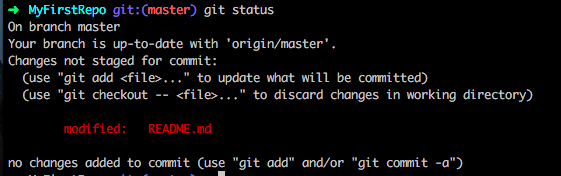
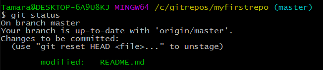
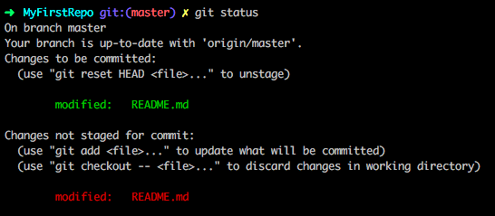

Part 4: Staging, Committing, and Pushing to GitHub
There are three vital steps to pushing your changes up to GitHub: staging, committing, and pushing. Let’s try it now.
In Git Bash or iTerm2, type
git status. This shows you what changes you have made to your code. You should see that your README.md file has changes: Notice it tells us these are "Changes not staged for commit:"
If you do not see any changes, double check that you saved your file in Atom.
Type
git add README.md.To verify that your files were added, type
git statusagain. Notice this time it tells us these are "Changes to be committed:" which means we've staged this file successfully.
In Atom, make another change to your README.md file and save the changes.
In Git Bash or iTerm2, check your status again by typing
git status. This time it knows you already had changes ready to be committed AND you have some more changes that have not yet been staged.
This time, type
git add -A, to add all files you have modified since the last commit to the staging area.The capitalization of the
Ais important in this step. A lowercase -a is not a command that Git recognizes by itself.Double check yourself that everything is staged by typing
git status.Commit your changes with a brief commit message by typing
git commit -m "Updated README.md to practice staging, committing, and pushing.".The -m flag allows you to provide a description of the changes. This is important information for those who may collaborate on the code later.
Your changes have been committed and are ready to be pushed up to GitHub.

Type
git push origin masterto initiate the push.“origin” tells Git you are pushing the changes to the original remote location.
“master” indicates which branch within the remote location you'd like to push to.
Voila! You have pushed your first revision to GitHub!